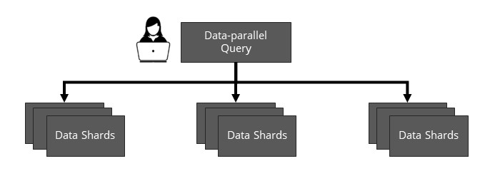

These days, people are building more kinds of databases and data systems than anyone can count. We have OLTP systems like CockroachDB and the classic Postgres, OLAP systems like Druid and Clickhouse, search systems like ElasticSearch and Solr, NoSQL databases like MongoDB and Cassandra, vector databases like Pinecone and Vespa, graph databases like Neo4j and Dgraph, data lakes like Delta Lake and Hudi, data warehouses like Snowflake and Redshift, and many others besides (including data lakehouses!). What I want to do in this blog post is impose a bit of order on the chaos and propose that many of these systems, which on the surface appear different, actually belong to one category with several useful shared properties: a category we call query serving systems.
At a high level, query serving systems serve data-parallel, low-latency queries. To make this more concrete, let's define them by these three properties:
- Query serving systems serve large data-parallel queries: queries are naturally parallelizable because they apply the same operation to multiple data items, and each query accesses gigabytes to terabytes of data.
- Query serving systems are specialized for low latency. They target a particular problem domain and can run large data-parallel queries in that domain in milliseconds to seconds with the help of highly optimized custom data representations.
- Query serving systems manage batch data updates. Updates are regular but can be batched, so highly concurrent conflicting writes are rarely a problem.
Once you know what to look for, it becomes clear that a lot of different systems have all three of these properties! For example, a full-text search system like Apache Solr or ElasticSearch performs queries that apply the same operation, a search, to every document; uses specialized data structures like inverted indexes to store documents and optimize search performance; and has append-mostly data ingest. A real-time OLAP database like Apache Druid performs aggregation queries that apply the same operations, like sums or group-bys, to every record; uses an optimized compressed columnar format to run these queries orders of magnitude faster than non-specialized systems; and has append-only data ingest. Many other systems similarly share these properties, including timeseries databases like InfluxDB and OpenTSDB, vector databases like Pinecone and Vespa, and even some (but not all) graph databases.
One interesting observation we made about query serving systems is that they all include a great deal of custom-built infrastucture needed to run at large scale, distributing data and queries across many machines. However, comparing across systems, we found that implementations of this distributed infrastructure are fundamentally similar. There's a basic distributed architecture shared by every system we looked at, one that arises naturally from the data parallelism of query serving workloads: they all partition data into many shards (where each shard stores data in a custom specialized data structure as discussed earlier), provide consistent and durable fault-tolerant updates for data stored in shards, replicate shards for high availability, and provide fault-tolerant distributed queries that run in a data-parallel fashion over many shards. To make this a bit clearer, we diagram below a data-parallel query executing over sharded data; the query serving system is responsible for distributing each query over many shards and for managing the data stored in the shards, updating it and keeping it available.

The ubiquity of this architecture is interesting because it implies we can encapsulate the distributed parts of different query serving systems in a common, modular abstraction, making scalable query serving systems much easier to build because developers could use this abstraction instead of writing custom distributed code for each new system. I've been investigating the question of whether a common abstraction is possible, and I recently published a paper (at the conference NSDI '22) about one possible abstraction, called data-parallel actors (DPA). The high-level idea is that we can represent a distributed query serving system as a collection of stateful actors where each actor is an opaque object encapsulating a partition or shard of data stored in some custom format like a Solr inverted index. By providing distributed guarantees (e.g., consistency and durability for updates) over data stored in actors and defining a set of generic parallel operators from which developers can construct any data-parallel query, DPA aims to make it possible to build a distributed query serving system from single-node components. To show DPA works, we ported several existing query serving systems (including Solr and Druid) to it and also used it to build a simplified data warehouse based on the single-node column store MonetDB. If this sounds interesting and you want to read more, there are a lot more details in the paper!
Zooming out, I think that DPA and systems like it are promising, but even if we don't end up building all query serving systems with a common abstraction, I hope that recognizing their similarities encourages researchers and engineers to view query serving systems in a new light and build modular infrastructure targeting them. For example, I'm currently working with some other people at Stanford on a general-purpose data placement algorithm for query serving systems that improves latency by maximizing query parallelism, spreading out shards that are frequently queried together. I suspect that it may also be possible to come up with interesting new general-purpose approaches to query serving system auto-scaling and incremental view maintenance. More broadly, I hope it's useful for query serving system developers to know that a large class of their problems are shared and they can look to other systems (and hopefully in the future, to general-purpose frameworks like DPA) for inspiration.